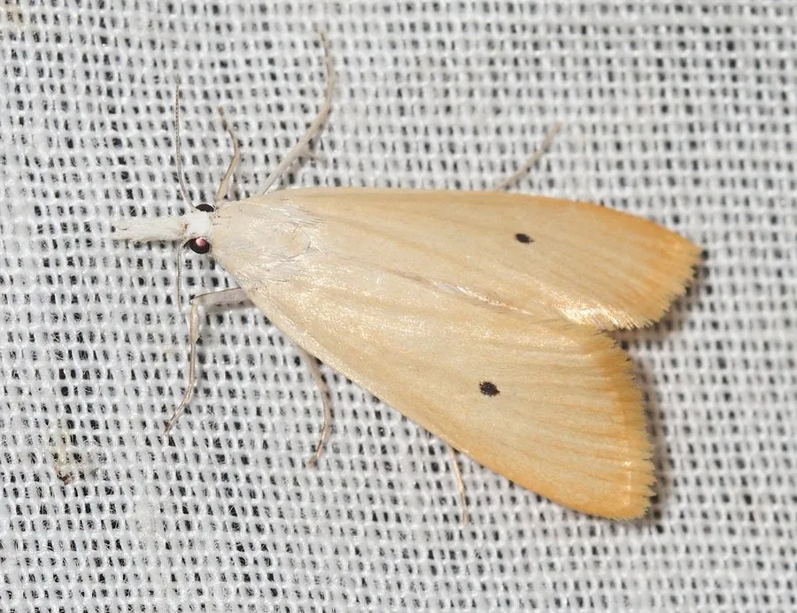

昆虫 · 动物界
三化螟 Scirpophaga incertulas

专食水稻的钻蛀性害虫，幼虫蛀入茎秆造成白穗，雌蛾翅面有黑点，是中国南方稻区的重要害虫。
- 分类
- 门节肢动物门纲昆虫纲目鳞翅目科草螟科属蛀禾螟属
- 栖息环境
- 水稻田，幼虫在水稻茎秆内生活
- 地理分布
- 中国南方稻区，以及南亚和东南亚
- 保护级别
- 暂无评估；水稻重要害虫
物种志
三化螟成虫翅展约 2–3 cm，雌蛾前翅淡黄色，中央有一个明显的黑色斑点，后翅白色；雄蛾前翅灰褐色，斑纹较淡。幼虫体长约 2 cm，淡黄白色，身体较细，老熟幼虫在稻桩中越冬，越冬幼虫化蛹前会转移到土面附近。
它专食水稻，幼虫孵化后蛀入茎秆取食，造成枯心和白穗，是水稻分蘖期和孕穗期的主要害虫之一。三化螟一年发生多代，以老熟幼虫在稻桩中越冬，在中国南方稻区危害较重。防治以处理越冬稻桩、灌水灭蛹、性诱剂、释放赤眼蜂和科学用药为主，在卵孵高峰期施药效果最好，同时要注意保护寄生蜂等天敌。
形态与习性
- 食性幼虫专食水稻，蛀入茎秆取食
- 翅展成虫约 2–3 cm，幼虫约 2 cm
- 识别雌蛾前翅淡黄色，中央有一个黑点
- 危害造成枯心和白穗，影响水稻产量
- 防治处理越冬稻桩、灌水灭蛹、性诱剂和科学用药
趣味知识
- 三化螟雌蛾前翅中央有一个明显的黑点，是识别它的关键。
- 它的幼虫只吃水稻，是专食性的水稻害虫。
- 受害稻田会出现白穗，严重时大面积减产。